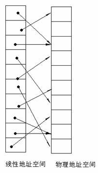
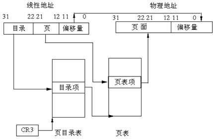
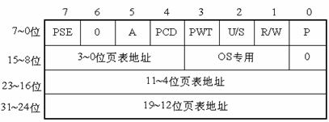
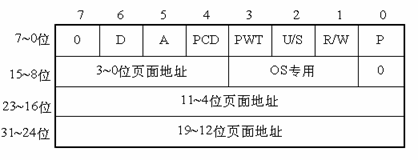
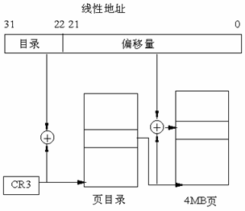
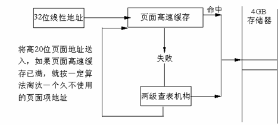
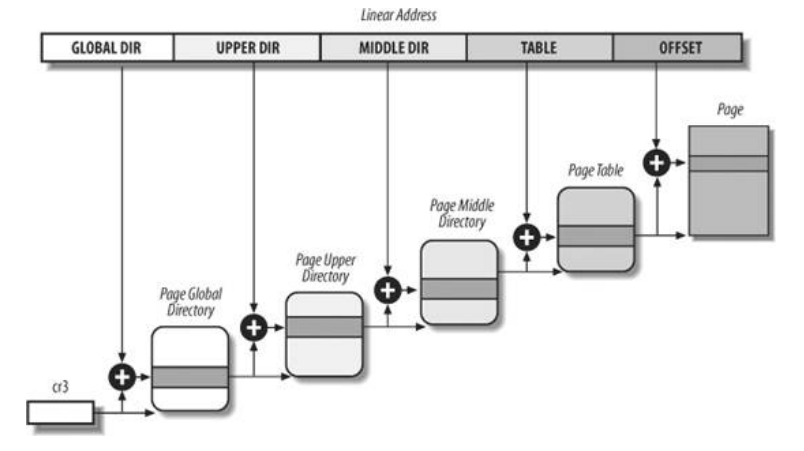

在上一篇文章Linux内存寻址之分段机制中，我们了解逻辑地址通过分段机制转换为线性地址的过程。下面，我们就来看看更加重要和复杂的分页机制。
分页机制在段机制之后进行，以完成线性—物理地址的转换过程。段机制把逻辑地址转换为线性地址，分页机制进一步把该线性地址再转换为物理地址。
硬件中的分页
分页机制由CR0中的PG位启用。如PG=1，启用分页机制，并使用本节要描述的机制，把线性地址转换为物理地址。如PG=0，禁用分页机制，直接把段机制产生的线性地址当作物理地址使用。分页机制管理的对象是固定大小的存储块，称之为页(page)。分页机制把整个线性地址空间及整个物理地址空间都看成由页组成，在线性地址空间中的任何一页，可以映射为物理地址空间中的任何一页（我们把物理空间中的一页叫做一个页面或页框(page frame)）

80386使用4K字节大小的页。每一页都有4K字节长，并在4K字节的边界上对齐，即每一页的起始地址都能被4K整除。因此，80386把4G字节的线性地址空间，划分为1M个页面，每页有4K字节大小。分页机制通过把线性地址空间中的页，重新定位到物理地址空间来进行管理，因为每个页面的整个4K字节作为一个单位进行映射，并且每个页面都对齐4K字节的边界，因此，线性地址的低12位经过分页机制直接地作为物理地址的低12位使用。
为什么使用两级页表
假设每个进程都占用了4G的线性地址空间，页表共含1M个表项，每个表项占4个字节，那么每个进程的页表要占据4M的内存空间。为了节省页表占用的空间，我们使用两级页表。每个进程都会被分配一个页目录，但是只有被实际使用页表才会被分配到内存里面。一级页表需要一次分配所有页表空间，两级页表则可以在需要的时候再分配页表空间。
两级页表结构
两级表结构的第一级称为页目录，存储在一个4K字节的页面中。页目录表共有1K个表项，每个表项为4个字节，并指向第二级表。线性地址的最高10位(即位31~位32)用来产生第一级的索引，由索引得到的表项中，指定并选择了1K个二级表中的一个表。
两级表结构的第二级称为页表，也刚好存储在一个4K字节的页面中，包含1K个字节的表项，每个表项包含一个页的物理基地址。第二级页表由线性地址的中间10位(即位21~位12)进行索引，以获得包含页的物理地址的页表项，这个物理地址的高20位与线性地址的低12位形成了最后的物理地址，也就是页转化过程输出的物理地址。

页目录项

- 第31~12位是20位页表地址，由于页表地址的低12位总为0，所以用高20位指出32位页表地址就可以了。因此，一个页目录最多包含1024个页表地址。
- 第0位是存在位，如果P=1，表示页表地址指向的该页在内存中，如果P=0，表示不在内存中。
- 第1位是读/写位，第2位是用户/管理员位，这两位为页目录项提供硬件保护。当特权级为3的进程要想访问页面时，需要通过页保护检查，而特权级为0的进程就可以绕过页保护。
- 第3位是PWT（Page Write-Through）位，表示是否采用写透方式，写透方式就是既写内存（RAM）也写高速缓存,该位为1表示采用写透方式
- 第4位是PCD（Page Cache Disable）位，表示是否启用高速缓存,该位为1表示启用高速缓存。
- 第5位是访问位，当对页目录项进行访问时，A位=1。
- 第7位是Page Size标志，只适用于页目录项。如果置为1，页目录项指的是4MB的页面，请看后面的扩展分页。
- 第9~11位由操作系统专用，Linux也没有做特殊之用。
页面项

80386的每个页目录项指向一个页表，页表最多含有1024个页面项，每项4个字节，包含页面的起始地址和有关该页面的信息。页面的起始地址也是4K的整数倍，所以页面的低12位也留作它用。
第31~12位是20位物理页面地址，除第6位外第0～5位及9~11位的用途和页目录项一样，第6位是页面项独有的，当对涉及的页面进行写操作时，D位被置1。
4GB的内存只有一个页目录，它最多有1024个页目录项，每个页目录项又含有1024个页面项，因此，内存一共可以分成1024×1024=1M个页面。由于每个页面为4K个字节，所以，存储器的大小正好最多为4GB。
线性地址到物理地址的转换

- CR3包含着页目录的起始地址，用32位线性地址的最高10位A31~A22作为页目录的页目录项的索引，将它乘以4，与CR3中的页目录的起始地址相加，形成相应页表的地址。
- 从指定的地址中取出32位页目录项，它的低12位为0，这32位是页表的起始地址。用32位线性地址中的A21~A12位作为页表中的页面的索引，将它乘以4，与页表的起始地址相加，形成32位页面地址。
- 将A11~A0作为相对于页面地址的偏移量，与32位页面地址相加，形成32位物理地址。
扩展分页
从奔腾处理器开始,Intel微处理器引进了扩展分页,它允许页的大小为4MB。

在扩展分页的情况下,分页机制把32位线性地址分成两个域：最高10位的目录域和其余22位的偏移量。
页面高速缓存

由于在分页情况下，每次存储器访问都要存取两级页表，这就大大降低了访问速度。所以，为了提高速度，在386中设置一个最近存取页面的高速缓存硬件机制，它自动保持32项处理器最近使用的页面地址，因此，可以覆盖128K字节的存储器地址。当进行存储器访问时，先检查要访问的页面是否在高速缓存中，如果在，就不必经过两级访问了，如果不在，再进行两级访问。平均来说，页面高速缓存大约有98%的命中率，也就是说每次访问存储器时，只有2%的情况必须访问两级分页机构。这就大大加快了速度。
Linux中的分页机制
Linux使用了一个适合32位和64位系统的分页机制。

- 页全局目录
- 页顶级目录
- 页中间目录
- 页表
页全局目录包含若干页上级目录的地址，页上级目录又依次包含若干页中间目录的地址，而页中间目录又包含若干页表的地址。每一个页表项指向一个页框。线性地址因此被分成五个部分。图中没有显示位数，因为每一部分的大小与具体的计算机体系结构有关。
对于没有启用物理地址扩展的32位系统，两级页表已经足够了。从本质上说Linux通过使“页上级目录”位和“页中间目录”位全为0，彻底取消了页上级目录和页中间目录字段。不过，页上级目录和页中间目录在指针序列中的位置被保留，以便同样的代码在32位系统和64位系统下都能使用。内核为页上级目录和页中间目录保留了一个位置，这是通过把它们的页目录项数设置为1，并把这两个目录项映射到页全局目录的一个合适的目录项而实现的。
启用了物理地址扩展的32 位系统使用了三级页表。Linux的页全局目录对应80×86 的页目录指针表（PDPT），取消了页上级目录，页中间目录对应80×86的页目录，Linux的页表对应80×86的页表。
最后，64位系统使用三级还是四级分页取决于硬件对线性地址的位的划分。
总结
这里我们不讨论代码实现，只关注原理。从上面的讨论可以看到分页机制主要依赖硬件的实现。Linux采用的四级页表只是为了最大化兼容不同的硬件实现，单就IA32架构的CPU来说，就有多种分页实现，常规分页机制，PAE机制等。
我们虽然讨论的是Linux的分页机制，实际上我们用了大部分篇幅来讨论Intel CPU的分页机制实现。因为Linux的分页机制是建立在硬件基础之上的，不同的平台需要有不同的实现。Linux在软件层面构造的虚拟地址，最终还是要通过MMU转换为物理地址，也就是说，不管Linux的分页机制是怎样实现的，CPU只按照它的分页实现来解读线性地址，所以Linux传给CPU的线性地址必然是满足硬件实现的。例如说：Linux在32位CPU上，它的四级页表结构就会兼容到硬件的两级页表结构。可见，Linux在软件层面上做了一层抽象，用四级页表的方式兼容32位和64位CPU内存寻址的不同硬件实现。
最后分享两篇linux内存寻址的实验文档，结合实例更容易理解。
Linux内存地址映射
Linux内核在x86_64 CPU中地址映射
参考资料
《深入理解Linux内核》
《深入分析Linux内核源码》